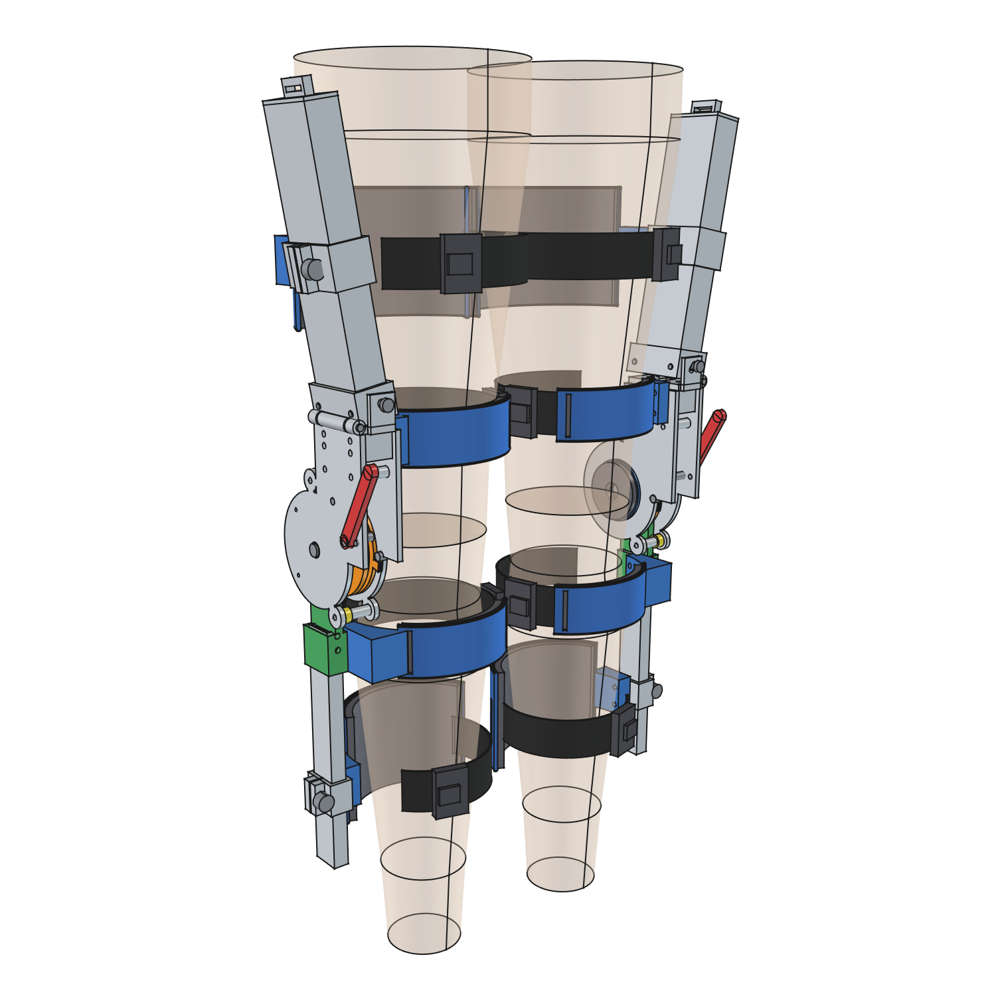
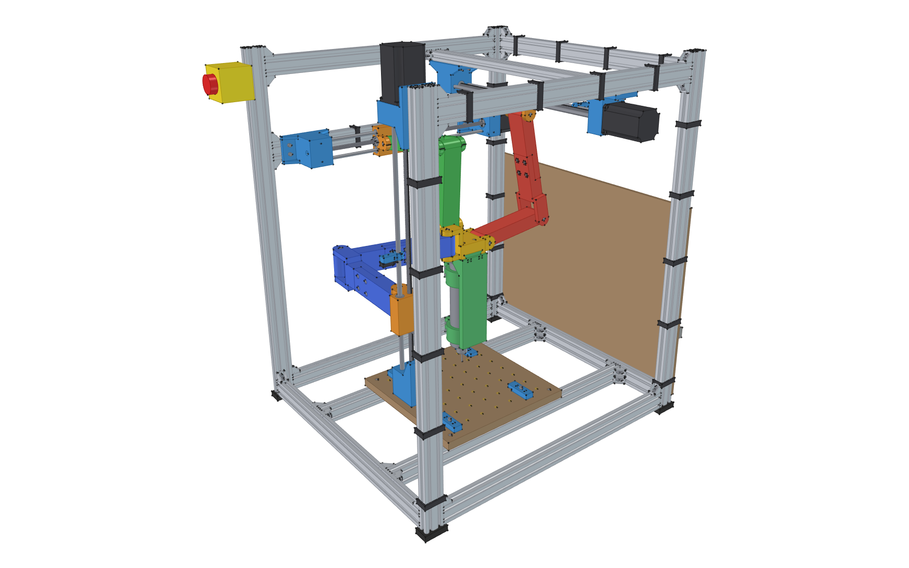
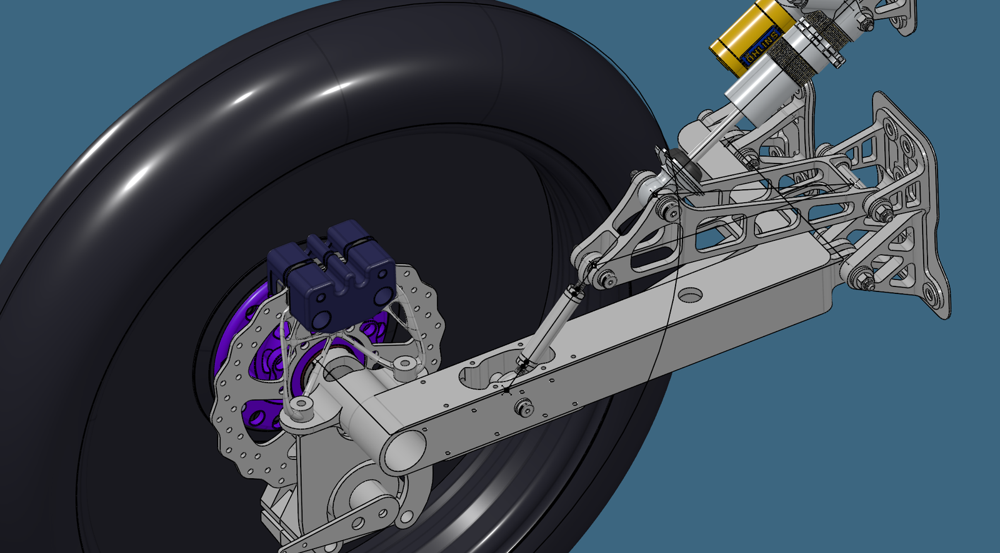
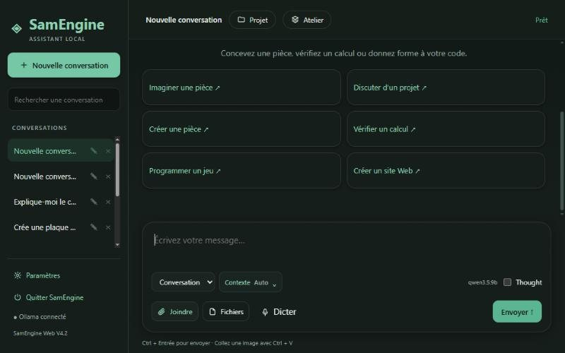
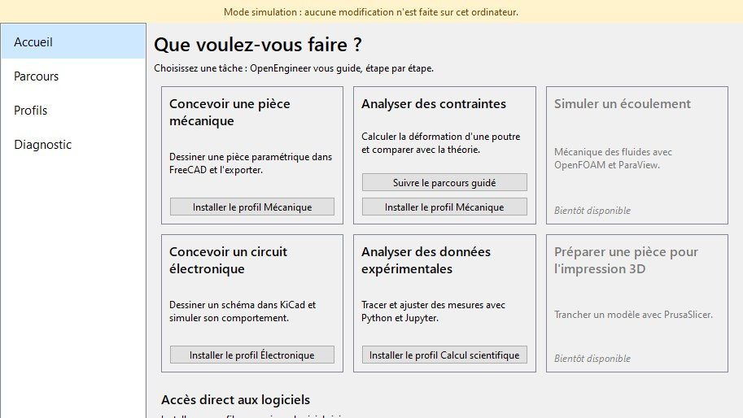

I am a mechanical engineering student with a strong interest in
design, product development and innovation. My main areas of
interest are hybrid exoskeletons, internal combustion engines,
and metallic materials and their alloys.
Hybrid exoskeletons
Internal combustion engines
Metals and alloys
02
What I’m looking for
I want to join a team where I can take a hands-on part in developing
mechanical systems, from understanding the need through design,
calculations, simulation and prototyping.
What drives me most is understanding how a mechanism works, testing my
ideas against real-world constraints and refining a design until it is
functional, reliable and manufacturable.
My experience on the Esteban team and the development of Daedalus HES
made me want to keep working on ambitious technical projects where
collaboration across engineering disciplines plays a central role.
03
Education
In progress
Bachelor of Engineering, Mechanical Engineering
Polytechnique Montréal
Coursework in mechanical design, strength of materials,
numerical simulation, manufacturing, thermodynamics and
mechanical systems development.
2024
DEC (college diploma) in Natural Sciences
Collège de Maisonneuve
Science program in mathematics, physics, chemistry
and programming.
2022
High school diploma
Collège Jean-Eudes
Mathematics, Science option (SN).
04
My projects
Three engineering projects, from defining the need to the
manufactured part. Click a project to see the details.

Personal projectIn developmentDaedalus HES
Hybrid Exoskeleton System — first module: a spring and
ratchet knee exoskeleton, designed to fit a wide range
of body types.
Current module
Knee — compression springs and clutched ratchet
Body sizes
5th-percentile female to 95th-percentile male
Assistance at 90°
11 to 27 N·m depending on size
Status
Detailed design complete — not built yet
The problem
I started Daedalus HES with the goal of designing a system
that helps a person lift or hold a heavy load while reducing
physical effort and the risk of injury.
A passive exoskeleton is usually simple and uses little
energy, but its level of assistance is limited. It must also
be adapted to each user’s body and movements.
A fully powered system, on the other hand, can provide more
assistance but consumes more energy. Motors and batteries
also add mass and bulk.
My goal is therefore to develop a hybrid architecture that
combines the advantages of both approaches. The system must
be compact and safe, and assist only when assistance is needed.
My contribution
Daedalus HES is a personal project that I develop on my own.
I am responsible for every stage of the design, from defining
the requirements to preparing the prototype.
I started by comparing several exoskeleton architectures and
different ways of transmitting force to the knee joint. I also
carry out the force and torque calculations needed to size
the mechanism.
The first module I took to detailed design is the knee. It
targets two demanding tasks: climbing stairs and standing up
from a seated position while carrying a backpack. This module
is fully passive: springs store energy, and a ratchet engages
them only when assistance is useful. The whole model is
parametric and generated by Python scripts in FreeCAD, so I
can regenerate the complete device for each user size.
Knee module
01
Spring and ratchet mechanism
The mechanism sits only on the outer side of the leg.
When the knee bends, a ratchet drives a crank pulley that
pulls a 3 mm cable. The cable compresses two springs
housed in the aluminium thigh tube, and their energy is
returned during extension.
The crank geometry gives a maximum lever arm between 60
and 90°, where the effort is most useful, then reduces it
in deep flexion, so the springs need no end stop. The
engagement angle can be set in 15° steps, and an
interlock prevents releasing the mechanism under load.
Full assembly on both legs: shells, front pads, straps
and side uprights.
Cutaway of the knee unit: ratchet ring, pawl, pulley and
release lever.
02
One design, many body types
I defined four reference sizes from the ANSUR II
anthropometric data (over 6,000 subjects): segment
lengths, thigh and calf circumferences, and body mass.
The device adapts through sliding clamps, shells in three
sizes, an adjustable abduction hinge and a spring set for
each size. Depending on size, assistance reaches 74 to 92 %
of the target, for about 2.7 kg per leg.
The same device fitted on four reference legs, from the
5th-percentile female to the 95th-percentile male.
03
Checks and test bench
Collision check from −2° to 150° of flexion, in four operating modes
Stress calculations for the critical parts with a 2× overload: safety factors from 2.2 to 13.8
Static and fatigue sizing of the springs
Estimated skin contact pressure of 5 to 30 kPa depending on the pad
Before anyone wears it, I designed a test bench built
around the real knee unit. A load cell and an angle sensor
measure torque in two independent ways, which isolates
friction. Testing will happen in two phases: first with
3D-printed PETG parts, then with the metal parts.
Test bench: knee unit, springs on guide rods, load cell
and measuring lever.
Tools and methods
Parametric CAD — FreeCAD and Python
Anthropometric analysis — ANSUR II data
Strength of materials and mechanical sizing
Static and fatigue spring sizing
Finite element analysis — FreeCAD FEM and CalculiX
Test bench design and instrumentation
Next steps
Print and assemble the test bench, then compare measured torque with the predicted curves
Improve the comfort of the front knee pads
Lighten the knee unit by pocketing the plates

Personal projectIn developmentCNC tripteron
Three-axis parallel-kinematics CNC milling machine, built
around 3D-printed parts and off-the-shelf components.
Architecture
Tripteron — three articulated legs, one per axis
Work volume
200 × 200 × 120 mm
Drive
3 stepper motors, 2.1 N·m, 8 mm lead screws
Tool
800 W spindle on interchangeable plates
The project
I am designing a tripteron CNC milling machine. Three
orthogonal linear actuators move a single platform through
articulated arms. Because the pivots of each leg are parallel
to its actuator, each motor drives exactly one axis: the
machine keeps simple Cartesian kinematics while benefiting
from the stiffness of a parallel structure.
The challenge was to design a machine I could build with my
own means: a 3D printer (PLA+ or PETG), M2 to M5 hardware,
aluminium extrusions and standard components.
My approach
01
Kinematics and parametric skeleton
I first built a parametric skeleton driven by a parameter
sheet: arm lengths, pivot positions and travel. An inverse
kinematics script places the three legs for any platform
position, then sweeps the whole work volume to check the
arms’ reach.
The mechanism alone in motion: each motor drives one axis,
and the three legs (red, green, blue) follow the platform
across the whole work volume. Animation generated from the
FreeCAD model.
02
Printed parts and joints
All nine pivots share the same principle: a clevis clamps
a fixed 8 mm shaft, and a hub rotates around it on two
608ZZ bearings. Print clearances are defined for each type
of fit (bearing press fit, free running, self-tapping
screws). The 27 printed parts are exported automatically
from the model.
Carriage, arms, platform, spindle plate and universal
plate, ready to print.
03
Full assembly and checks
The full assembly is generated by Python macros: 2040
aluminium frame, actuators, printed parts, hardware,
clamping bed and electronics. The model checks collisions
with the real shapes throughout the work volume and
produces the bill of materials directly.
The full assembly in motion: aluminium frame, emergency
stop, clamping bed and spindle.
Tools and methods
Parametric CAD — FreeCAD
Python macros to generate and check the assembly
Inverse kinematics of parallel mechanisms
Design for 3D printing (PLA+ and PETG)
Linear guides, bearings and lead-screw drives
Collision detection and automatic bill of materials
Next steps
Print the parts and assemble the frame
Wire the electronics and calibrate the three axes
Run the first test cuts

Mechanical team2024 – 2026Esteban Project — Esteban 12
Polytechnique Montréal’s solar car — parking brake, trailing
arm and steering drag rod.
Role
Member of the mechanical team
Contributions
Parking brake, trailing arm and drag rod
Tools
CAD, mechanical calculations, simulation and Python
Context
Collaboration with the mechanical and electrical teams
The project
Esteban is Polytechnique Montréal’s solar car project.
Entirely developed by students, the car brings together
mechanical, electrical and electronic systems that must work
together within very tight space and mass limits.
For me, Esteban was a chance to move from course material to a
real engineering project. On Esteban 12, every part had to be
light, reliable, safe and compatible with the rest of the
vehicle. A change that seemed minor could affect several other
systems.
My contribution
I was part of Esteban’s mechanical team from 2024 to 2026.
Over those two years, I worked on three components of
Esteban 12: the parking brake, the trailing arm of the
suspension and the steering drag rod.
My work was not limited to modelling parts. I had to understand
their function, consider the loads they would carry and make
sure they could be manufactured, assembled and integrated into
the vehicle.
These assignments let me follow several stages of mechanical
development, from studying the problem to analysing and
integrating the chosen solution.
Work on Esteban 12
2024
Parking brake
The parking brake was one of my first assignments on
Esteban 12. I took part in choosing the mechanism and
integrating it into the vehicle. To simplify its sizing, I
also developed a Python program that automatically
calculates several key parameters from the system data.
This work required reading the manufacturer’s
documentation, comparing possible solutions and turning the
mechanism’s requirements into a geometry that could be
integrated into the vehicle.
PDF
Parking brake datasheet
Public documentation from the manufacturer, used to
understand the mechanism’s characteristics and guide
its integration into Esteban 12.
Python program written to automate the calculation of
the mechanism’s main parameters.
Selected solution for integrating the parking brake.
Technical documentation used to select and size the
mechanism.
2025
Suspension trailing arm
In 2025, I took part in developing the suspension trailing
arm. This part connects the wheel to the vehicle structure
and must carry the suspension loads while keeping its own
mass low.
I worked on its geometry, its mechanical analysis and its
evolution into a manufacturable part. This assignment
helped me better understand the link between simulation
results, a part’s shape and real manufacturing constraints.
CAD model of the trailing arm and its interfaces with
the suspension.
Mechanical analysis used to evaluate the component’s
behaviour under load.
Trailing arm manufactured for integration into
Esteban 12.
2026
Steering drag rod
In 2026, I worked on the steering drag rod and its bracket.
This system transmits steering motion to the wheels and
therefore plays a direct role in controlling the vehicle.
I took part in designing the drag rod, developing its
bracket and analysing the mechanical behaviour of the
assembly. The goal was a sufficiently stiff and reliable
solution that respects the vehicle’s geometric constraints.
CAD model of the steering drag rod.
Development of the bracket connecting the drag rod to
the steering system.
Mechanical analysis of the drag rod and its behaviour
under load.
Teamwork and lessons learned
Working on Esteban meant collaborating with students from
several engineering disciplines. A decision made by the
mechanical team could affect the space available for the
batteries, wiring, sensors or other electrical components.
This experience taught me to treat each part as one piece of a
complete system. I also learned to present my technical
choices, listen to my teammates’ feedback and adapt a design
when it created a constraint for another part of the vehicle.
Beyond technical knowledge, Esteban showed me how much
communication and teamwork matter to the success of a
large-scale engineering project.
Skills developed
Turning a functional need into an integrable mechanical solution
Using calculations and simulation to guide a design
Adapting a part to manufacturing and assembly constraints
Integrating several components into a complete mechanical system
Communicating and collaborating with the mechanical and electrical teams
Outside of mechanical engineering, I develop video games and software.
These projects are my playground for programming, 3D modelling and
tool design. Click a project to see the details.
Video
Video game · Released
A short, wordless art game: a black silhouette crosses a crimson
world towards its opposite. Reflections, a crowd that copies every
move and a world that shatters. Free on Windows.
Godot
GDScript
3D animation
See details →
Video game · In development (v0.9)
A first-person exploration and puzzle game: 24 locations linked by 58 portals whose destinations change every 25 minutes. Places rebuilt from reference paintings and a field-book interface.
Godot 4
Blender
GDScript
Python
See details →

Video
Software · Version 4.2
An engineering assistant that runs entirely on my computer with
local AI models. It helps design parts in FreeCAD, check
calculations and program games, backed by a technical document
library.
Python
Ollama
RAG
FreeCAD
See details →

Software · Pre-release
A gateway to open-source engineering on Ubuntu and Debian. It
installs complete environments (mechanical, electronics,
scientific computing) and offers a task-oriented launcher: you
pick “Analyse stresses” rather than a piece of software.
Python
PySide6
Linux
Automated tests
See details →
Video game · Released
Dichotomy
A short, wordless art game about meeting your opposite.
The opening cinematic, then the run to the black hole, recorded in the released version (without sound).
Engine
Godot 4
Platform
Windows
Status
Released for free on itch.io
Assets
Mixamo animations, Pixabay music
The experience
You play a faceless black figure walking through a crimson world
towards a black void. Waiting at the end is your opposite. The game
has no text at all: it tells its story through staging, light and
music. You meet your reflection, get lost in a crowd that copies your
every move, and in the end everything shatters.
What I built
The cinematics, built with animation tracks and camera cuts, and skippable.
The character controller: movement, running, jumping and mouse-look camera.
A shatter effect: falling into the void breaks the character, who reforms on the last stable ground.
An options menu, including an adjustable 3D resolution with FSR upscaling.
The Windows export and the itch.io release, with a download integrity check.
The title screen.Running among the suspended bodies.The shatter effect: the body breaks into shards.At the edge of the black hole.Crossing the void.Act 1: the crowd of clones that copies every move.The fractured reflection, in the white world.
A first-person expedition through a world whose passages change destination while you play.
The current 0.9.30 build: the title screen, then arriving under a glass dome (recorded in game, without sound).
Engine
Godot 4.7 (Forward+ and OpenGL)
Version
Playable 0.9.30, GDD 3.48 (276 pages)
Content
24 locations, 58 portals, 7 explorers
Tools
Godot, Blender, Python
The concept
Seven explorers are scattered across 24 impossible places: an inhabited quarter, crop fields, flooded rooms, a star laboratory, altered-gravity archives and coastal shelters. The 58 portals linking them change partner every 25 minutes of active play. To return home, you must calibrate a device on three axes, keep two valid paths open and gather all seven members. There is no clue counter: every condition is physical.
What changed in v0.9
After v0.7, I reworked the whole game place by place. Each room starts from a reference painting, is first blocked out in 3D (grey-box) and hand-tested, then detailed. The inhabited quarter (SC2) is the first place fully painted, lit and detailed. The interface was also rebuilt as a field book: pause, settings, notes, a map of crossings and conversations.
What I built
The game design document (GDD), updated with every version: 276 pages in v3.48.
The 24 places rebuilt in Blender through scripts, from reference paintings.
Portals with a live view of their destination, reusing at most three render worlds.
A field-book interface: map of crossings, notes, hypotheses and the explorers’ messages.
Polished movement (swimming included) and full accessibility: text up to 180 %, high contrast, remappable controls, gamepad.
Thousands of automated checks: collisions, crossings, interactions and performance.
The inhabited quarter’s plaza (SC2), the first fully painted place.Talking with Mira Sen, the expedition leader.The field book: a map of the crossings made.Tomas, one of the explorers, in his shelter.Arriving under the glass dome (v0.9.30).The method: reference painting on the left, 3D block-out on the right.Reference paintings for the 24 places (AI-generated), used to guide modelling.
Software · Version 4.2
SamEngine
An engineering assistant that runs entirely on my computer, with no
subscription and without sending my files online.
Interface preview: home screen, dark theme, a response in progress and the workshop.
Language
Python
Models
Local AI with Ollama
Interface
Local web app, light and dark themes
Status
Version 4.2, in development
The project
I wanted an assistant that could help with my engineering and
programming projects while staying on my machine. SamEngine combines
local language models, a technical document library (RAG) and tools
such as FreeCAD and Godot. It offers three working modes,
Conversation, Engineering and Code, which share the memory of the
current project. The interface itself is in French.
Main features
Creating parts in FreeCAD and checking mechanical calculations.
Searching an engineering and code document library, citing the passages used.
Project memory: constraints, units and decisions kept from one conversation to the next.
A workshop that gathers the generated files and 3D models.
File attachments, pasted images and voice dictation.
In development
A supervised self-improvement engine: SamEngine proposes a limited
change to its own code, tests it in an isolated copy, and adopts it
only if an independent evaluation approves it. Every change stays
reversible. Next come technical drawings from 3D models and
assemblies with joints.
The home screen in light theme.Project memory, shared across modes.The workshop next to a torque calculation.
Software · Pre-release
SamEngineOS
A simple gateway to engineering with open-source software, designed
to see a real task through to the end.
The launcher home screen in simulation mode (interface in French).
Language
Python
Interface
PySide6 (Qt)
Target systems
Ubuntu and Debian
Status
Pre-release 0.1
The idea
Installing FreeCAD, CalculiX or KiCad and knowing where to start is
still a hurdle for many students. SamEngineOS installs complete
environments and offers a task-oriented launcher: you pick “Analyse
stresses” rather than “open CalculiX”. Guided walkthroughs then take
the user all the way to a result, and help them critique it.
Design principles
No mandatory account, subscription or online service.
Only signed packages from the official repositories, installed without running the interface as administrator.
A clean uninstall that removes only what the program itself added.
No changes to disks, boot configuration or drivers.
A simulation mode and automated tests, to develop without installing anything.
Profiles
Mechanical
FreeCAD with CalculiX, Gmsh, OpenSCAD
Electronics
KiCad, ngspice
Scientific computing
GNU Octave, NumPy, SciPy, Matplotlib, Jupyter
Guided walkthrough: simulating a beam in bending.Each profile lists its software, licences and sources.